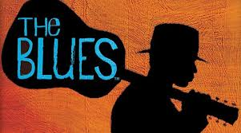

El rock es un término amplio que agrupa a una variedad de géneros de música popular.1 Su forma originaria, conocida como rock and roll, surgió mayormente de la combinación de dos géneros anteriores como eran el rhythm and blues y el country. La música rock también se nutrió fuertemente del blues y el folk, e incorporó influencias del jazz, la música clásica y otras fuentes. El rock se ha centrado en la guitarra eléctrica, normalmente como parte de un grupo de rock con cantante, bajo, batería y, algunas veces, instrumentos de teclado como el órgano y el piano. Típicamente, el rock es una música centrada en las canciones, habitualmente con compás de 4/4 (a diferencia del compás 8/8 generalmente empleado en primeras formas de r&b y el rock n' roll) usando una estructura verso-estribillo, pero el género se ha vuelto extremadamente diverso y las características musicales comunes son difíciles de definir. Como la música pop, las letras se centran a menudo en el amor romántico, pero también tratan un rango amplio de otros temas con un enfoque frecuente en lo social y lo político. El rock pone más énfasis en la composición, la actuación en vivo y la autenticidad que la música.

A finales de la década de 1950, referida como la "era dorada" o el periodo del "rock clásico", surgieron distintos subgéneros distintivos del rock, híbridos como el blues rock, folk rock, country rock y el jazz rock fusión, muchos de los cuales contribuyeron al desarrollo del rock psicodélico, influenciado por la escena psicodélica contra-cultural. Los nuevos géneros que emergieron de esta escena incluyen el rock progresivo, que extendió los elementos artísticos; el glam rock, que resaltó el espectáculo en vivo y el estilo visual; y el subgénero mayor, diverso y longevo que es el heavy metal, que se centraba en el volumen, el poder y la velocidad. En la segunda mitad de los años 1970, el punk intensificó y reaccionó contra algunas de estas tendencias para producir una música cruda y energética. El punk fue una influencia en la década de 1980 en el desarrollo subsecuente de otros subgéneros, entre ellos el new wave, el post-punk y el movimiento del rock alternativo. Desde la década de 1990, el rock alternativo comenzó a dominar el género y saltó a la fama en las formas de grunge, Britpop e indie rock. Desde entonces han aparecido otros subgéneros de fusión como el pop punk, rap rock y nu metal, así como intentos de recordar la historia del rock, incluyendo la restauración de principios del nuevo milenio del garage rock, el post-punk y el synth pop.
La música rock también abarcó y sirvió de vehículo para los movimientos culturales y sociales, llevando a la creación de subculturas importantes incluyendo los mods y los rockers en el Reino Unido, y la contracultura hippie que se propagó en San Francisco (Estados Unidos) en la década de 1960. De forma similar, la cultura punk de la década de 1970 originó las subculturas visualmente distintivas Emo y Gótico. Heredera de la tradición folclórica de la canción de protesta, la música rock ha sido asociada con el activismo político así como los cambios en las actitudes sociales sobre el racismo, el sexo y el uso de drogas, y es usualmente vista como una expresión de la rebelión juvenil contra el consumismo y conformismo.